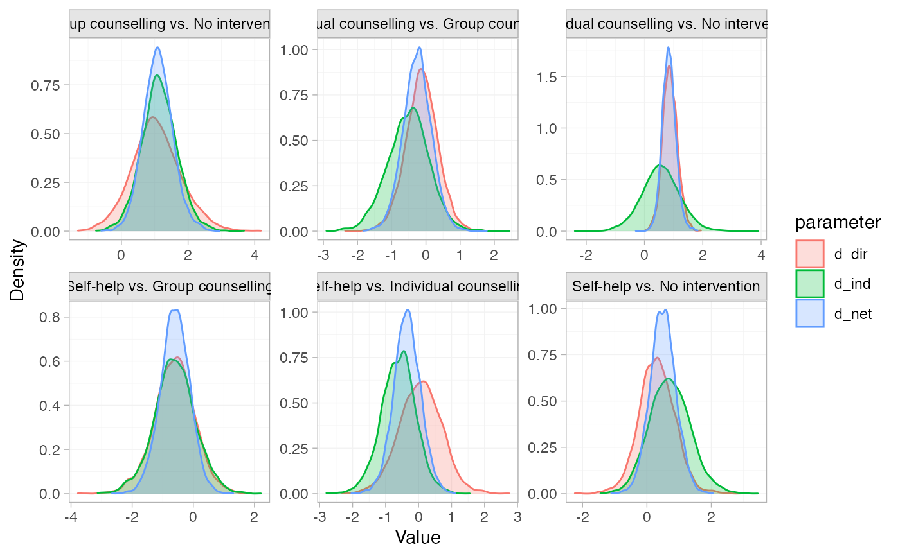

Summarise the results of node-splitting models
Source:R/nma_nodesplit-class.R
summary.nma_nodesplit_df.RdPosterior summaries of node-splitting models (nma_nodesplit and
nma_nodesplit_df objects) can be produced using the summary() method, and
plotted using the plot() method.
Usage
# S3 method for nma_nodesplit_df
summary(
object,
consistency = NULL,
...,
probs = c(0.025, 0.25, 0.5, 0.75, 0.975)
)
# S3 method for nma_nodesplit
summary(
object,
consistency = NULL,
...,
probs = c(0.025, 0.25, 0.5, 0.75, 0.975)
)
# S3 method for nma_nodesplit
plot(x, consistency = NULL, ...)
# S3 method for nma_nodesplit_df
plot(x, consistency = NULL, ...)Arguments
- consistency
Optional, a
stan_nmaobject for the corresponding fitted consistency model, to display the network estimates alongside the direct and indirect estimates. The fitted consistency model present in thenma_nodesplit_dfobject will be used if this is present (seeget_nodesplits()).- ...
Additional arguments passed on to other methods
- probs
Numeric vector of specifying quantiles of interest, default
c(0.025, 0.25, 0.5, 0.75, 0.975)- x, object
A
nma_nodesplitornma_nodesplit_dfobject
Value
A nodesplit_summary object
Details
The plot() method is a shortcut for plot(summary(nma_nodesplit)). For
details of plotting options, see plot.nodesplit_summary().
Examples
# \donttest{
# Run smoking node-splitting example if not already available
if (!exists("smk_fit_RE_nodesplit")) example("example_smk_nodesplit", run.donttest = TRUE)
# }
# \donttest{
# Summarise the node-splitting results
summary(smk_fit_RE_nodesplit)
#> Node-splitting models fitted for 6 comparisons.
#>
#> ------------------------------ Node-split Group counselling vs. No intervention ----
#>
#> mean sd 2.5% 25% 50% 75% 97.5% Bulk_ESS Tail_ESS Rhat
#> d_net 1.11 0.45 0.23 0.80 1.11 1.40 2.00 1743 2183 1
#> d_dir 1.09 0.76 -0.31 0.56 1.06 1.57 2.68 3035 2474 1
#> d_ind 1.14 0.54 0.08 0.79 1.14 1.50 2.24 1726 2352 1
#> omega -0.06 0.91 -1.80 -0.66 -0.08 0.53 1.85 2122 2087 1
#> tau 0.88 0.20 0.56 0.73 0.85 0.99 1.35 1206 1566 1
#> tau_consistency 0.85 0.19 0.55 0.72 0.83 0.95 1.28 1198 1676 1
#>
#> Residual deviance: 53.6 (on 50 data points)
#> pD: 43.9
#> DIC: 97.4
#>
#> Bayesian p-value: 0.93
#>
#> ------------------------- Node-split Individual counselling vs. No intervention ----
#>
#> mean sd 2.5% 25% 50% 75% 97.5% Bulk_ESS Tail_ESS Rhat
#> d_net 0.85 0.24 0.39 0.68 0.84 1.00 1.33 1260 1936 1
#> d_dir 0.88 0.25 0.40 0.72 0.87 1.04 1.39 1855 2404 1
#> d_ind 0.60 0.68 -0.71 0.14 0.59 1.03 1.95 1488 1743 1
#> omega 0.28 0.71 -1.13 -0.18 0.28 0.76 1.66 1563 1919 1
#> tau 0.86 0.19 0.56 0.72 0.84 0.98 1.30 1068 2058 1
#> tau_consistency 0.85 0.19 0.55 0.72 0.83 0.95 1.28 1198 1676 1
#>
#> Residual deviance: 54.3 (on 50 data points)
#> pD: 44.5
#> DIC: 98.8
#>
#> Bayesian p-value: 0.68
#>
#> -------------------------------------- Node-split Self-help vs. No intervention ----
#>
#> mean sd 2.5% 25% 50% 75% 97.5% Bulk_ESS Tail_ESS Rhat
#> d_net 0.50 0.39 -0.25 0.24 0.50 0.76 1.30 1802 2439 1
#> d_dir 0.34 0.53 -0.70 -0.02 0.33 0.68 1.42 2918 2543 1
#> d_ind 0.71 0.62 -0.48 0.31 0.71 1.10 1.98 1731 2267 1
#> omega -0.38 0.81 -2.02 -0.88 -0.36 0.15 1.17 1747 2268 1
#> tau 0.86 0.19 0.55 0.73 0.84 0.98 1.33 1200 1720 1
#> tau_consistency 0.85 0.19 0.55 0.72 0.83 0.95 1.28 1198 1676 1
#>
#> Residual deviance: 54 (on 50 data points)
#> pD: 44.3
#> DIC: 98.3
#>
#> Bayesian p-value: 0.63
#>
#> ----------------------- Node-split Individual counselling vs. Group counselling ----
#>
#> mean sd 2.5% 25% 50% 75% 97.5% Bulk_ESS Tail_ESS Rhat
#> d_net -0.26 0.42 -1.09 -0.52 -0.26 0.02 0.56 2254 2524 1
#> d_dir -0.11 0.48 -1.05 -0.42 -0.10 0.21 0.83 3714 2957 1
#> d_ind -0.56 0.63 -1.86 -0.95 -0.55 -0.14 0.64 1681 1816 1
#> omega 0.45 0.69 -0.92 0.00 0.43 0.89 1.86 1788 1899 1
#> tau 0.86 0.20 0.56 0.72 0.84 0.97 1.33 1267 1956 1
#> tau_consistency 0.85 0.19 0.55 0.72 0.83 0.95 1.28 1198 1676 1
#>
#> Residual deviance: 54 (on 50 data points)
#> pD: 44.3
#> DIC: 98.3
#>
#> Bayesian p-value: 0.5
#>
#> ------------------------------------ Node-split Self-help vs. Group counselling ----
#>
#> mean sd 2.5% 25% 50% 75% 97.5% Bulk_ESS Tail_ESS Rhat
#> d_net -0.60 0.48 -1.53 -0.92 -0.61 -0.29 0.32 2412 2787 1
#> d_dir -0.61 0.68 -1.95 -1.06 -0.62 -0.18 0.73 4260 3067 1
#> d_ind -0.62 0.69 -2.01 -1.07 -0.60 -0.16 0.74 2256 2327 1
#> omega 0.00 0.90 -1.73 -0.60 -0.04 0.59 1.85 2229 2306 1
#> tau 0.87 0.20 0.56 0.73 0.84 0.99 1.34 1073 1779 1
#> tau_consistency 0.85 0.19 0.55 0.72 0.83 0.95 1.28 1198 1676 1
#>
#> Residual deviance: 53.8 (on 50 data points)
#> pD: 44
#> DIC: 97.8
#>
#> Bayesian p-value: 0.97
#>
#> ------------------------------- Node-split Self-help vs. Individual counselling ----
#>
#> mean sd 2.5% 25% 50% 75% 97.5% Bulk_ESS Tail_ESS Rhat
#> d_net -0.34 0.40 -1.12 -0.60 -0.35 -0.08 0.43 2133 2632 1
#> d_dir 0.06 0.66 -1.25 -0.37 0.06 0.49 1.39 3085 2728 1
#> d_ind -0.62 0.54 -1.69 -0.96 -0.61 -0.28 0.41 1521 1928 1
#> omega 0.68 0.83 -0.95 0.14 0.68 1.22 2.34 1973 1991 1
#> tau 0.86 0.19 0.55 0.72 0.83 0.97 1.30 1149 1491 1
#> tau_consistency 0.85 0.19 0.55 0.72 0.83 0.95 1.28 1198 1676 1
#>
#> Residual deviance: 53.7 (on 50 data points)
#> pD: 44.1
#> DIC: 97.9
#>
#> Bayesian p-value: 0.4
# Plot the node-splitting results
plot(smk_fit_RE_nodesplit)

# }